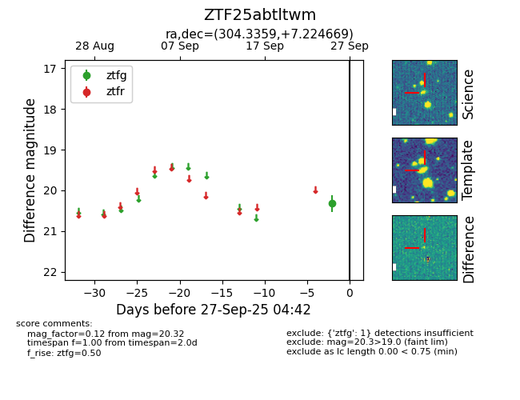

FINK: ZTF25abtltwm
Lasair: ZTF25abtltwm
ALeRCE: ZTF25abtltwm
ZTF25abtltwm (ztf,fink)
equatorial (ra, dec) = (304.3359,+7.22467)
galactic (l, b) = (49.6647,-15.42099)

last ztfg=20.32
1 ztfg detections